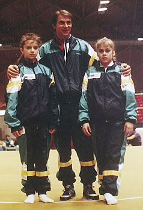

Silvia Mitova (BUL)
1992 European V Bronze Medalist

Silvia Mitova (left) and Maya
Hristova
with coach Zharkov Mitov at the 1991 European Cup.
Medal Total
European Championships: 1 Bronze
Silvia was born on June 29, 1976 in
Sofia. Her mother, Maya Blagoeva, was a former Olympic gymnast.
Although she never won a medal at a major championships for her floor exercise,
she is best known for her expression and choreography on this event. She
now lives in Pennsylvania, is married, and has a young daughter. Silvia
runs her own gym, Silvia's Gymnastics, in Zieglerville, PA.
Competition Results
- 1989
- Intl. Junior Championships: 12th AA, 6th B
Jr. Friendship Tournament (Druzhba): 3rd Team, 3rd B, 4th FX, 8th V
- Jr. Team European Championships: 4th AA
-
- 1990
- Athens International: 3rd V
Golden Sands: 3rd AA, 1st V
- Jr. Team European Championships: 4th AA
- Medeco Cup: 3rd AA
-
- 1991
- DTB Cup: 5th AA, 4th FX, 5th V
- Dutch Open: 1st AA
- European Cup: 4th AA, 3rd FX
- FRA-BUL Dual Meet: 2nd AA
- Gander Memorial: 5th AA
- Hungarian International: 4th AA
- Jr. European Championships: 2nd AA, 2nd FX, 4th V, 6th
UB, 8th B
- Rome Grand Prix: 5th AA
- Sofia International: 1st AA
Swiss Cup: 2nd Team
- World Championships (Indianapolis): 16th AA, 6th FX
-
- 1992
- European Championships: 12th AA, 3rd V,
4th FX
- Olympic Games: 12th Team, 11th AA, 8th FX
- World Championships (Paris): 4th B, 5th V, 9th FX, 16th
UB (prelims)
This page was last updated on August 23, 2007.
© Gymn Forum